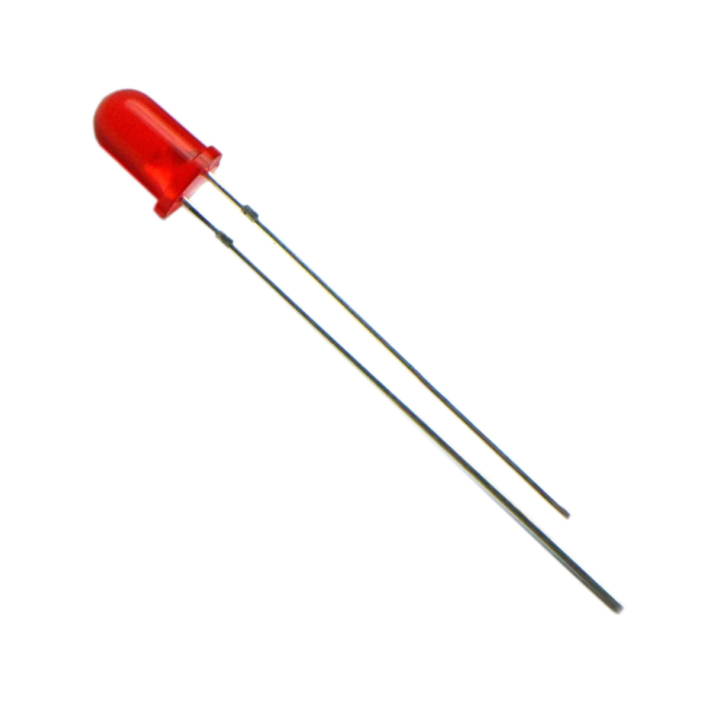
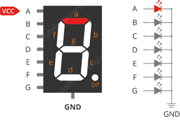
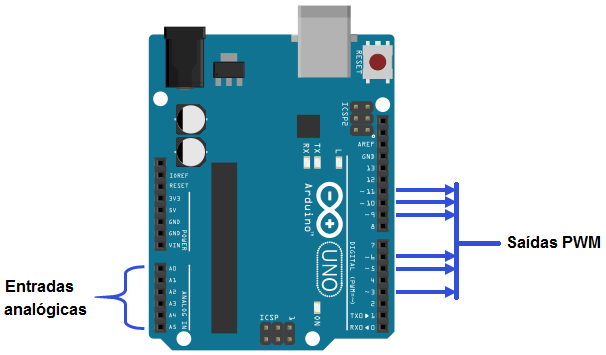
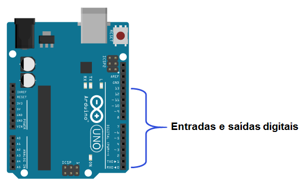
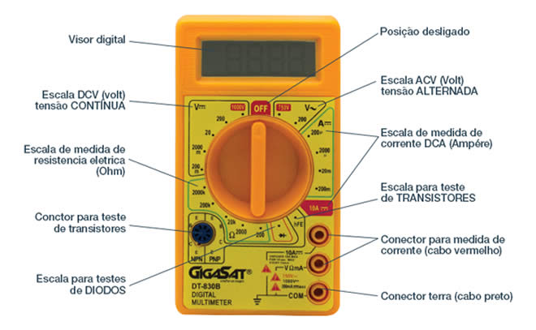

Resistores e código de cores
Um resistor é um componente eletrônico que limita ou regula a corrente elétrica em um circuito. Ele transforma energia elétrica em calor e é usado para proteger outros componentes, controlar a tensão ou ajustar sinais elétricos.

Diodo LED e display sete segmentos
O LED é um tipo especial de diodo que emite luz visível (ou infravermelha/ultravioleta, dependendo do material) quando atravessado por corrente elétrica no sentido direto. Ele é amplamente utilizado por sua eficiência e durabilidade em aplicações como iluminação, indicadores e displays.
Um display de sete segmentos é uma estrutura composta por sete LEDs organizados em formato de "8". Ele é amplamente utilizado para exibir números e algumas letras.
 tinkercad - projeto exemplo com print de tela
O Tinkercad é uma plataforma gratuita e online criada pela Autodesk que permite criar, simular e prototipar projetos em 3D, circuitos eletrônicos e programação. É amplamente utilizado para aprendizado em design, eletrônica e modelagem 3D, tanto para iniciantes quanto para pessoas que já têm experiência na área.
 16.44.54_456aaa00.jpg)
placa arduíno
A placa Arduino é uma plataforma de hardware livre projetada para facilitar o desenvolvimento de projetos eletrônicos interativos. Ela combina um microcontrolador programável com pinos de entrada e saída, permitindo a interação com sensores, LEDs, motores e outros dispositivos.

Programa no IDE arduíno
A IDE Arduino é uma plataforma de desenvolvimento que você usa para escrever e carregar programas (chamados de sketches) em placas Arduino. Aqui está uma explicação sobre como funciona o processo de programação:

entrada e saida(pwm) analógica no arduíno
A entrada analógica é usada para ler sinais de dispositivos que variam de forma contínua, como sensores de temperatura, umidade, luz, etc. O Arduino possui pinos analógicos (A0, A1, A2, etc.) que podem ser usados para essa leitura.
entrada e saida digital no arduíno
A entrada digital é usada para ler sinais de dispositivos digitais, como botões ou interruptores, que têm apenas dois estados possíveis: ligado (HIGH) ou desligado (LOW).
Multímetro o que é e para que serve
O ultímetro, também chamado de multímetro, é um aparelho usado para medir grandezas elétricas, como tensão (voltagem), corrente e resistência. Ele serve para testar e diagnosticar circuitos elétricos e eletrônicos, verificando se estão funcionando corretamente ou se têm algum problema, como curto-circuito ou componentes danificados.
Com ele, você pode medir voltagem em tomadas ou baterias, testar a continuidade de fios e componentes, e até verificar se resistores ou outros elementos estão em boas condições. Ele é essencial para quem trabalha ou faz manutenção em sistemas elétricos.
Inidades de medida no multímetro
Um multímetro é uma ferramenta essencial para medir diversas grandezas elétricas. Ele pode medir tensão (voltagem), corrente elétrica, resistência e outros parâmetros, dependendo das unidades de medida e das funções selecionadas. A seguir, explico as unidades de medida mais comuns que você encontrará em um multímetro.
